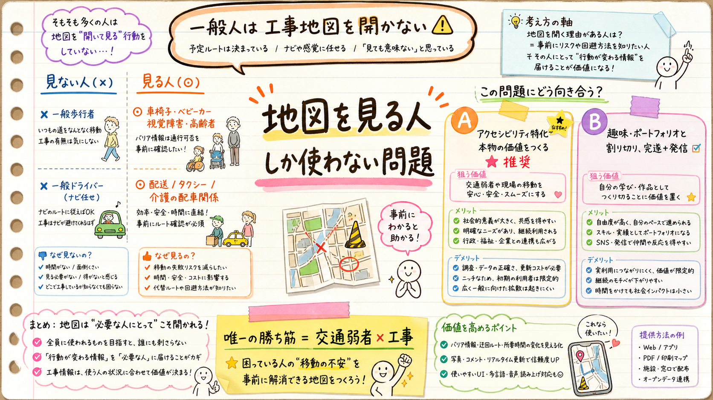

「地図を見ながら移動する人しか価値がないのでは＝趣味レベルでは？」という問い。答え：一般人に対してはその通り。だが“出発前に必ず地図を見る”実在行動を持つ人だけは別。そこが唯一の勝ち筋。

“出発前に地図を見る”のが実在行動かどうかで分かれる。
| 利用者 | 事前に地図を見る？ | 理由 |
|---|---|---|
| 一般歩行者 | ✕ 見ない | 行き当たりばったり。工事地図を開く習慣がない |
| 一般ドライバー | ✕ 見ない | Google/Yahooカーナビが既に規制を経路に反映。別地図は不要 |
| 自転車（新規ルート） | △ ときどき | 初めての道は調べるが習慣化まではしない |
| 車椅子・ベビーカー・視覚障害・高齢者 | ◎ 必ず見る | 歩道が塞がる＝行き止まり／危険。事前確認は死活問題で実在行動 |
| 配送・タクシー・バス・介護訪問の配車 | ◎ 見る | ルート計画が仕事。規制は遅延・コストに直結 |
気づき：地図interactionが本物の価値を持つ唯一のセグメントが「交通弱者＋プロの配車」。偶然ではなく、そこだけ“事前に地図を見る”が実在行動だから。前回の一点突破と一致する。
インタラクションモデルの問題。
| モデル | 価値 | 難点 |
|---|---|---|
| Pull＝開いて見る地図 | 低 | 誰も工事地図を開かない。ナビと重複。＝趣味レベルの正体 |
| Push＝関係する所だけ届く | 高 | データ完全性＋ユーザー基盤が必要。ハッカソンでは実証困難 |
| データ基盤＝既存アプリに流す | 中 | 価値はあるがデモで見えない＋JARTIC等が既存 |
「趣味で出すノリ」も正しい割り切りの一つ。要は狙いを決めること。
正直な線引き：「実世界で意味あるものにしたい」なら実質 A 一択。「完遂と発信の実績が欲しい・世界を変える必要はない」なら B が正解で、“趣味のノリ”はむしろ健全なスコープ管理。B を選ぶこと自体は負けではない。